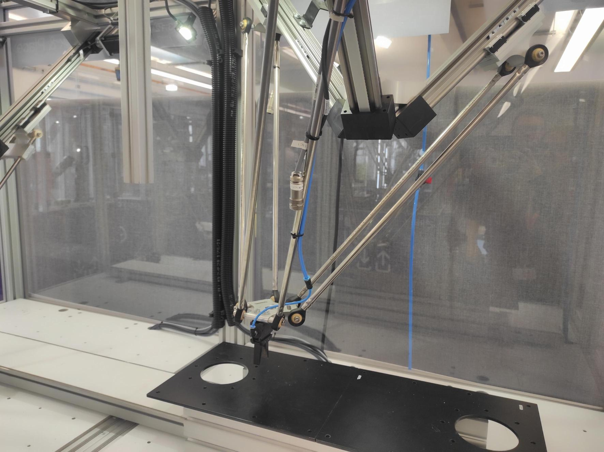
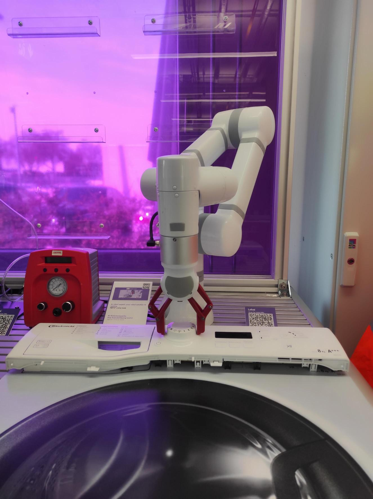
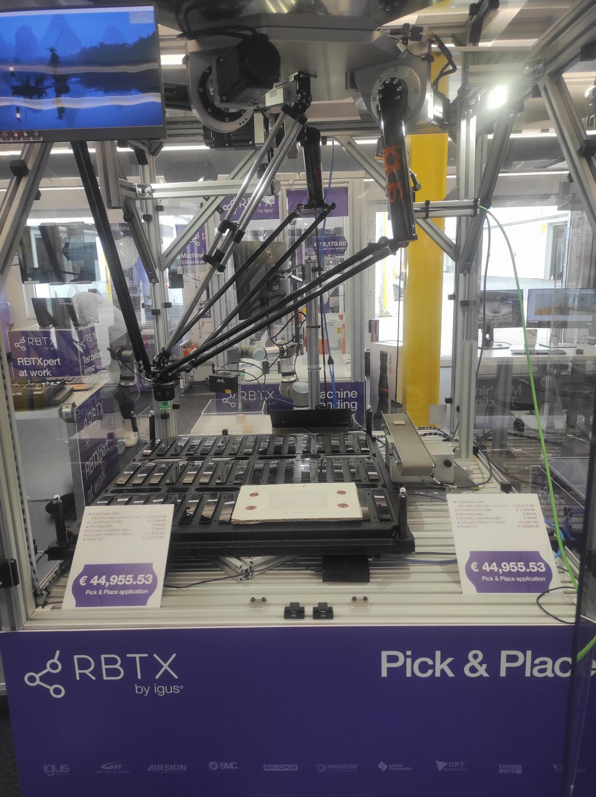

Low Cost Automation - lca - rbtx
Ein Vorstellungsraum
Der Dobot
Der Dobot ist ein Cobot, das heißt ein kooperativer Robot. Er ist der erste Roboter mit dem wir bei igus gearbeitet haben.
Der Dobot zeichnet sich dadurch aus, dass er eine Safe Skin hat. Damit kann er entdecken, ob Gewebe, wie z.B. eine Hand in der Nähe ist.
Zudem hat er, wie auch andere Cobots eine Hand-Teach Funktion. Mithilfe dieser Funktion kann man den Dobot einfach auf eine gewünschte
Position schieben. Hiermit lassen sich Punkte sehr einfach einteachen und das macht diesen Roboter sehr umgänglich.
Rebel Anwendungen

Hier ist der ReBeL.
Mit diesem Roboterarm haben wir schon vor dem Praktikum gearbeitet. Er ist eine der kosteneffizientesten Lösungen von igus.
Während des Praktikums haben wir die Möglichkeit ihn ausführlicher kennenzulernen.
Wir haben die Chance neue Greifer auszuprobieren und konkrete Anwendungen zu programieren, wie in den Videos erkennbar.
Außerdem haben wir die unterschiedlichen Generationen und ihre Entwicklung beobachten können.
Der Rebel Move
Dies ist der Transportroboter ReBeL Move.
Er lässt sich zunächst manuell über einen Xbox-Controller steuern und
erfasst mithilfe eines 270°-Laserscanners seine Umgebung. Auf Basis dieser Daten ist er in der Lage, definierte
Zielpunkte selbstständig anzufahren etwa um Kisten zu transportieren. Ein individuell programmiertes
Steuerungssystem ermöglicht dabei eine sichere, kollisionsfreie Navigation durch den Raum.
Dieses Robotersystem erleichtert Lageristen die Arbeit deutlich: Es kann gezielt gerufen und gesteuert werden,
um Materialien auf Anfrage zu bringen. Zusätzlich lässt sich der ReBeL Move mithilfe eines Fußtasters auch
manuell bedienen, zurückschicken oder für andere Aktionen aktivieren. Darüber hinaus ist er in ein IoT-System
integrierbar und kann über vernetzte Geräte zentral gesteuert und überwacht werden.
Unser erster Kundentest - DR50

Dies ist der DR-50-Roboter. Dieser Roboter unterscheidet sich deutlich im Aufbau vom Roboterarmen, lässt sich
jedoch über dieselbe Benutzeroberfläche programmieren wie der ReBeL.
Hier haben wir unseren ersten Kundentest
programmiert. Bei diesem Test haben wir zunächst aufgrund unvollständiger Informationen
einen ersten Testaufbau programmiert. Dieser bestand aus einer sehr einfachen Pick-and-Place-Anwendung über
eine Strecke von 300 mm. Einige Stunden später erhielten wir dann das korrekte Testdokument mit den tatsächlichen
Anforderungen.
Die Aufgabe bestand darin, medizinische Objekte von zwei nebeneinander liegenden Positionen
mithilfe eines spezifischen Greifers in ein Loch werfen zu lassen. Eine zusätzliche Herausforderung war es, den
Programmablauf so kurz wie möglich zu gestalten. Dafür mussten wir unter anderem die Achsbeschleunigung optimieren
und dafür sorgen, dass der Roboter flüssige Bewegungen ausführt und nicht abrupt stoppt, sondern gleichmäßig von
einer Achsbewegung in die nächste übergeht.
Für die Bewegung des Greifers haben wir das erste Mal mit Pneumatik,
Druckluft, gearbeitet. Für die Kundenanwendung war es essentiell die richtige Druckausübung auf die zu bewegenden
Materialien zu ermitteln, sodass nichts fallen gelassen wird aber auch nichts durch den Greifer zerbricht.
Andere Cobots
Lebai, HMI, Hitbot, kurze Beschreibung, Vergleich mit dem Rebel, Bezug auf die Programoberflächen
Der DR1000 - Aufbau zum Kundentest
Robot Beschreibung, Erläuterung des Umbaus
Der "große" Epson
Der Epson Roboterarm ist ein klassischer Vertreter der Industriearmroboter und überzeugt durch seine robuste Bauweise, hohe Geschwindigkeit und präzise Bewegungsabläufe. Mit seiner deutlich höheren Traglast im Vergleich zu kleineren Robotern wie dem ReBeL eignet er sich ideal für anspruchsvolle Aufgaben, bei denen es auf Kraft und Reichweite ankommt. Besonders in der Automobilbranche ist dieser Robotertyp weit verbreitet. Durch seine Größe und Power ist der Epson allerdings kein Cobot: Er arbeitet nicht in direkter Nähe zu Menschen und würde alles im Weg stehende problemlos beiseiteräumen. Dafür punktet er mit Tempo, Präzision und Ausdauer. Die Oberfläche um den Epson zu programmieren hat uns besonders gefallen. Das Handeling war leicht und hat viel Spaß gemacht.